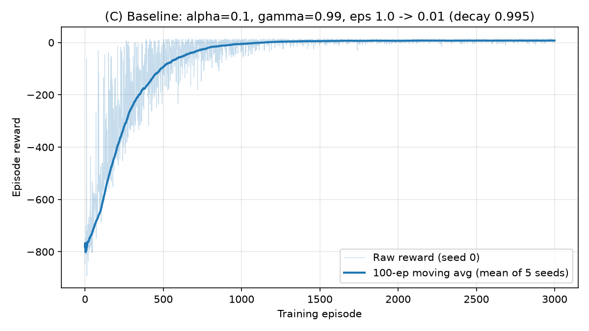
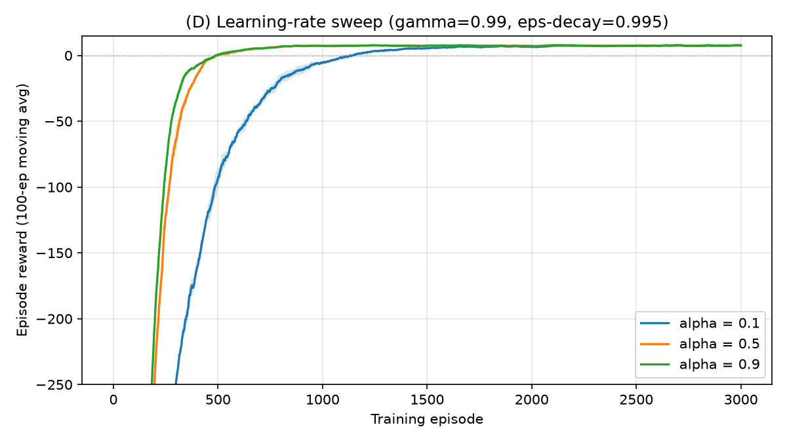
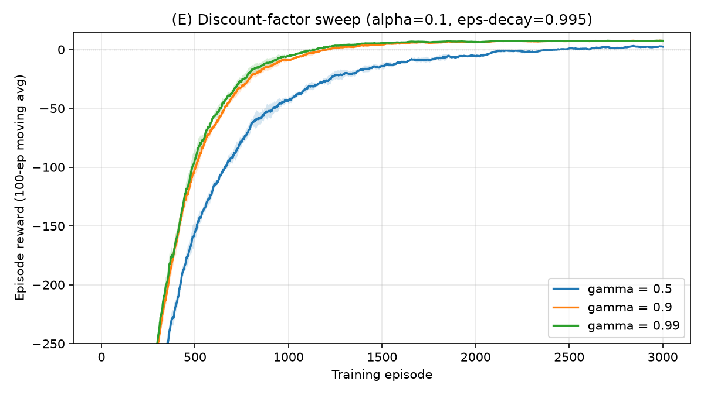
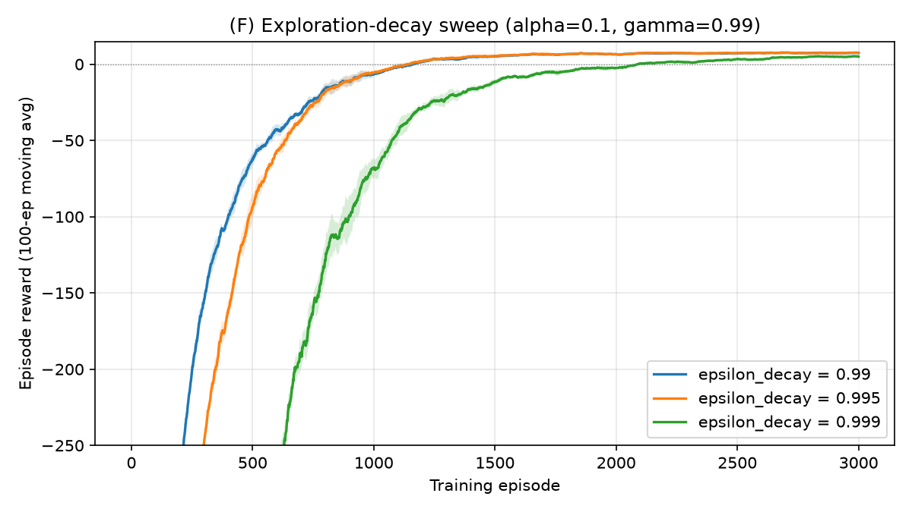
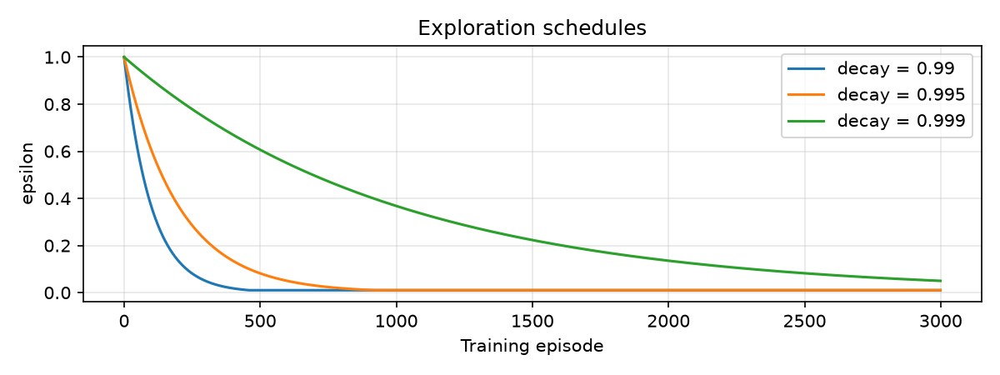
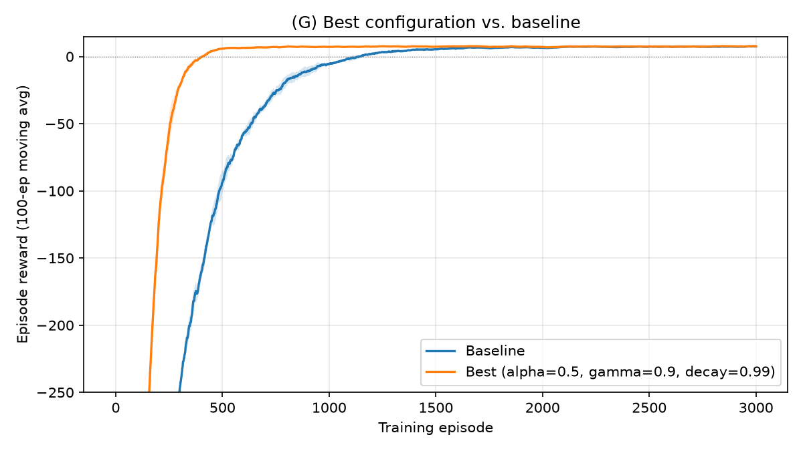
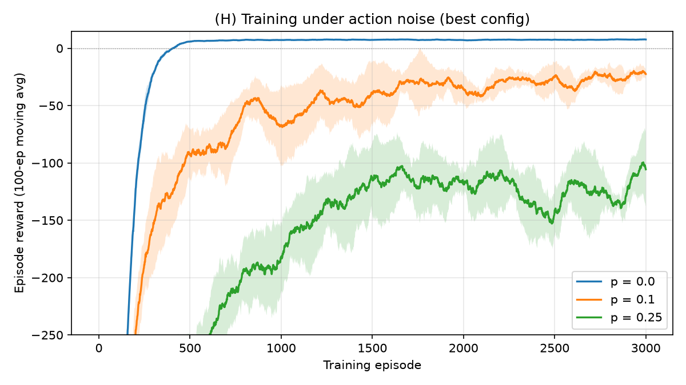
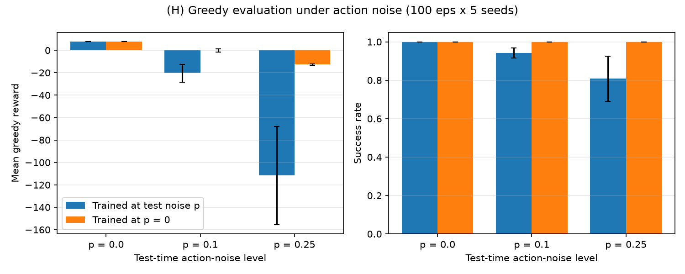

Goal. A taxi drives around a 5×5 grid with walls. It has to go to the passenger's location (one of four colored depots: R, G, Y, B), pick the passenger up, drive to the passenger's destination (a different depot), and drop them off, in as few steps as possible.
State space. There are 500 discrete states, encoded as one integer: 25 taxi positions × 5 passenger locations (4 depots or "in taxi") × 4 destinations. 400 of these are reachable during an episode. Because the space is small and discrete, tabular Q-learning applies directly and no discretization is needed.
Action space. 6 discrete actions: 0 = South, 1 = North, 2 = East, 3 = West, 4 = Pickup, 5 = Drop-off.
Transition dynamics. With the default settings (is_rainy=False, fickle_passenger=False), transitions are deterministic. A move shifts the taxi one cell. If a wall or the grid edge is in the way, the taxi stays put and still pays the step cost. Pickup succeeds only when the taxi is on the passenger's cell, and Drop-off succeeds only at the destination with the passenger on board. Every episode starts with a random taxi position, passenger location and destination.
Reward structure. −1 per step, +20 for a correct drop-off, and −10 for an illegal Pickup or Drop-off. The best achievable average return over random starts is about 8.46.
Termination. The episode terminates on a successful drop-off. It is truncated after 200 steps by Gymnasium's TimeLimit wrapper. My agent treats these differently: on termination the update target is just r, and on truncation it still bootstraps from s′, because running out of time isn't a true end state of the MDP.
Settings used. Default Taxi-v4 (deterministic). For Part H, I add a separate, controllable noise source with an ActionWrapper (described there).
Everything is in qlearning.py and written from scratch. No RL libraries are used besides the Gymnasium environment.
q_init (default 0).epsilon_start and is multiplied by epsilon_decay after every episode, with a floor of epsilon_min.Every hyperparameter is a field in a single Config dataclass (alpha, gamma, epsilon_start, epsilon_min, epsilon_decay, episodes, q_init, noise_p, seed), so each experiment is one line, e.g. train(BASE.with_(alpha=0.5)).
def update(self, s, a, r, s2, terminated):
target = r if terminated else r + self.cfg.gamma * self.Q[s2].max()
self.Q[s, a] += self.cfg.alpha * (target - self.Q[s, a])
Experimental protocol. Every configuration is trained with 5 independent seeds. The plots show the seed-average of a 100-episode moving average of training reward, with a ±1 std band across seeds. "Final performance" is the mean training reward over the last 200 episodes. "Learning speed" is the number of episodes until the 100-episode moving average first reaches 0. Greedy evaluation (ε = 0) uses 100 episodes per seed with a fixed set of evaluation start states.
| α | γ | ε schedule | Episodes | Q init |
|---|---|---|---|---|
| 0.1 | 0.99 | 1.0 → ×0.995 per episode → floor 0.01 (reaches the floor at ~ep 919) | 3000 | 0 |

Initial results. The first episodes average about −780: the agent wanders for all 200 steps and makes many illegal pickups and drop-offs (−10 each). Once successful deliveries start propagating value back through the Q-table, the reward climbs steadily. The moving average crosses 0 at around episode 1,129 and levels off around +7.4 over the last 200 episodes, close to the ~8.46 optimum. Under greedy evaluation the baseline delivers in 97.6% of episodes with a mean reward of 3.08. The remaining 2.4% are episodes where the greedy policy loops until the 200-step cutoff (−200). They come from start states the agent rarely visited, which tells me α = 0.1 hadn't fully converged Q in every reachable state after 3000 episodes.

| α | Episodes to MA ≥ 0 | Mean reward, all 3000 eps | Final reward (last 200) | Std across seeds |
|---|---|---|---|---|
| 0.1 | 1129 | −52.3 | 7.43 | 0.21 |
| 0.5 | 494 | −24.8 | 7.52 | 0.24 |
| 0.9 | 491 | −21.7 | 7.51 | 0.25 |
Observations. A larger α learns more than twice as fast: α = 0.5 and 0.9 reach a positive average in ~490 episodes, versus ~1,130 for α = 0.1. Final performance is nearly the same for all three (7.4–7.5). Stability is also about the same: the across-seed std is ~0.2 and the within-run std is ~3.5 for all three, and that within-run spread comes from random start positions, not from the learning rule. The usual argument for a small α is averaging out noisy targets. Taxi is deterministic, so each sample of r + γ max Q(s′,·) is already exact given the current Q, and a big step size doesn't hurt. Taking (nearly) the whole step at α = 0.9 moves each Q-value straight to its target. The gap between 0.5 and 0.9 is small because both are already fast enough that ε-decay, not α, becomes the bottleneck. Part H shows the other side: with stochastic transitions, a large α is a problem.

| γ | Episodes to MA ≥ 0 | Final reward (last 200) | Greedy success rate | Greedy mean reward | Greedy mean steps |
|---|---|---|---|---|---|
| 0.5 | 2175 | 2.32 | 38.8% | −118.7 | 126.8 |
| 0.9 | 1192 | 7.38 | 94.4% | −3.5 | 23.3 |
| 0.99 | 1129 | 7.43 | 97.6% | 3.1 | 17.4 |
Immediate vs. future reward. A Taxi trip takes about 10–16 steps, so the +20 delivery reward is always well in the future. With γ = 0.5, a reward 12 steps away is worth 20 × 0.512 ≈ 0.005, which rounds to nothing. Meanwhile the sum of the −1 step costs approaches −2 in every state. Far from the goal, every action's Q-value is about −2 and the differences that point toward the passenger disappear. The agent is effectively myopic: it learns to avoid the immediate −10 penalties but can't see the payoff. Its greedy policy completes only 39% of episodes and loops in the rest, and it learns about twice as slowly. γ = 0.9 carries enough signal over a ~15-step horizon (0.915 ≈ 0.21) to learn a good policy. γ = 0.99 is slightly better and slightly faster here. Taxi rewards planning the whole trip, so a γ near 1 fits it best. A low γ would only make sense if the important rewards came within a few steps.


| ε-decay | Episodes to MA ≥ 0 | Mean reward, all 3000 eps | Final reward (last 200) |
|---|---|---|---|
| 0.99 | 1129 | −38.1 | 7.33 |
| 0.995 | 1129 | −52.3 | 7.43 |
| 0.999 | 2057 | −122.0 | 4.96 |
Effect on learning. This is the classic explore/exploit trade-off. 0.999 explores far too long. ε stays above 0.2 for the first ~1,600 episodes, so the agent keeps taking random actions (including −10 pickups) even after it knows better. Its training reward only turns positive around episode 2,057, and it finishes at 4.96 because ε is still ~5% at the end. 0.99 exploits earliest, so it has the best area under the curve (−38.1). With α = 0.1, though, it stops exploring before every state's Q-values are refined, so its final reward ends up slightly below 0.995's. 0.995 gives the best final performance at this α. The best decay rate depends on α: a faster learner (α ≥ 0.5) can afford to stop exploring sooner, which Part G confirms.
How I chose the best configuration. Parts D–F each change one parameter, but the parameters interact (see F). So I ran a grid of α ∈ {0.1, 0.5, 0.9} × γ ∈ {0.9, 0.99} × ε-decay ∈ {0.99, 0.995, 0.999}: 18 configurations × 5 seeds = 90 agents. I ranked them by final training reward (last 200 episodes, seed-averaged) and broke ties by mean reward over all episodes, which rewards faster learning. Top of the ranking:
| Rank | α | γ | ε-decay | Final reward | Mean reward, all 3000 eps | Episodes to MA ≥ 0 |
|---|---|---|---|---|---|---|
| 1 | 0.5 | 0.9 | 0.99 | 7.62 | −15.7 | 407 |
| 2 | 0.5 | 0.99 | 0.99 | 7.59 | −15.8 | 396 |
| 3 | 0.9 | 0.99 | 0.995 | 7.51 | −21.7 | 491 |
| — | 0.1 | 0.99 | 0.995 | 7.43 | −52.3 | 1129 (baseline, rank 10) |
| 18 | 0.1 | 0.99 | 0.999 | 4.96 | −122.0 | 2057 |
The top two are essentially tied (7.62 vs. 7.59), so γ matters little once it's ≥ 0.9. The clear winners are the larger α combined with faster ε-decay, and every 0.999 configuration lands at the bottom. Full results for all 18 configurations are in results/results.json.

Greedy evaluation (ε = 0), 100 episodes × 5 trained seeds = 500 episodes (well over the 30 required):
| Metric | Baseline | Best |
|---|---|---|
| Mean reward | 3.08 | 7.94 (optimum ≈ 8.46) |
| Std of reward | 31.15 | 2.51 |
| Success rate (passenger delivered) | 97.6% | 100% (all 5 seeds) |
| Mean steps per episode | 17.4 | 13.1 |
| Worst episode | −200 (timeout loop) | +3 |
| Episodes to learn (MA ≥ 0) | 1129 | 407 (2.8× faster) |
The best agent never fails, its worst episode is still positive, and its reward std drops from 31 to 2.5. The remaining spread just reflects how far apart the random start positions are. Its mean of 7.94 is within about 0.5 of the theoretical optimum. The rendered video (results/taxi_trained_agent.mp4 in the repository) shows five greedy episodes, all delivered in 7–16 steps.
Noise source. NoisyActionWrapper (a Gymnasium ActionWrapper) replaces the agent's chosen action with a different valid action, picked uniformly at random, with probability p. It has its own seeded RNG, so the noise is reproducible. I trained the best configuration (α = 0.5, γ = 0.9, decay 0.99) at p ∈ {0, 0.10, 0.25}, evaluated each agent at its own noise level, and also evaluated the p = 0 policy under added noise.


| Test p | Trained at test p: reward / success / steps | Trained at p = 0: reward / success / steps | Follow-up (α = 0.1, 10k eps) trained at test p |
|---|---|---|---|
| 0 | 7.94 / 100% / 13.1 | 7.94 / 100% / 13.1 | — |
| 0.10 | −20.4 / 94.2% / 29.9 | −0.10 / 100% / 16.0 | 0.78 / 100% / 15.5 |
| 0.25 | −111.7 / 80.8% / 68.4 | −12.7 / 100% / 19.7 | −18.0 / 100% / 22.5 |
Learning speed and final reward. Noise hurts both. At p = 0.10 and 0.25 the training moving average never reaches 0 within 3000 episodes, and final training reward drops from +7.6 to −24 and −113. Part of that cost is unavoidable: every random substitution wastes a step, and 2 of the 5 substitute actions are Pickup/Drop-off, which usually cost −10.
Policy robustness. The most interesting result is that the p = 0 policy is the most robust. It still delivers in 100% of episodes at both noise levels, and its reward degrades gradually (7.9 → −0.1 → −12.7) as it recovers from the random perturbations. The agents trained with noise using the "best" α = 0.5 did much worse: they sometimes looped until the time limit. The reason is that α = 0.5 was tuned for the deterministic environment. With stochastic transitions, each update target is a noisy sample, and a large constant α keeps chasing the latest sample instead of averaging, so Q never settles. To test this I retrained under noise with α = 0.1 for 10,000 episodes (h_followup.py). That fixed the failures (100% success at both noise levels) and slightly beat the p = 0 policy at p = 0.10 (0.78 vs. −0.10). At p = 0.25 it was still a bit worse (−18.0 vs. −12.7). That fits the structure of the noise: substitutions are spread uniformly over the other actions, so they barely change which action is best, and the optimal noisy-environment policy is close to the deterministic one. Training under noise then mostly adds variance to the Q-estimates. Takeaways: the deterministic-optimal α does not carry over to stochastic settings (use a smaller or decaying α and more episodes), and a policy learned cleanly can stay robust when the noise is unbiased.
Reproducibility: pip install -r requirements.txt, then python experiments.py, python h_followup.py, python record_video.py. All numbers in this report come from results/results.json and results/H_followup.json.